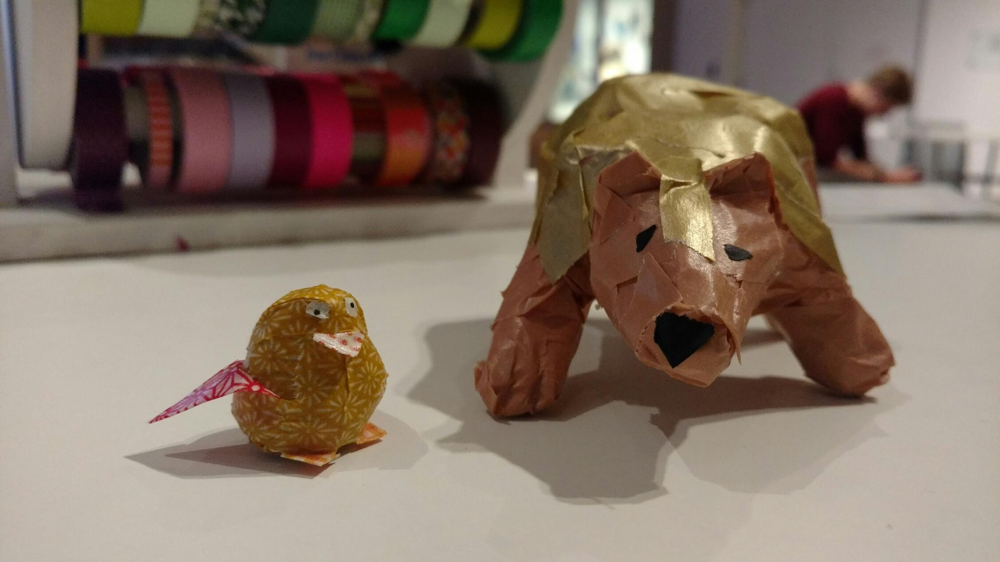
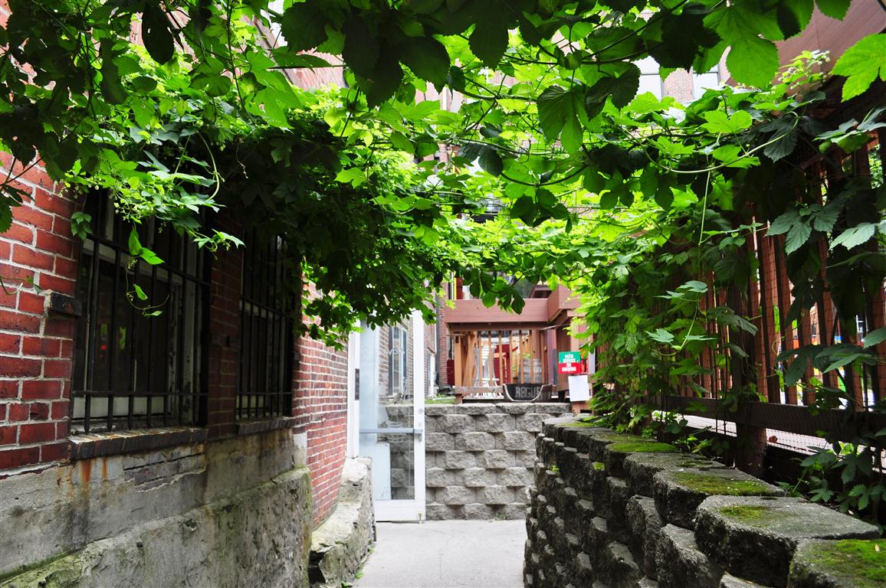
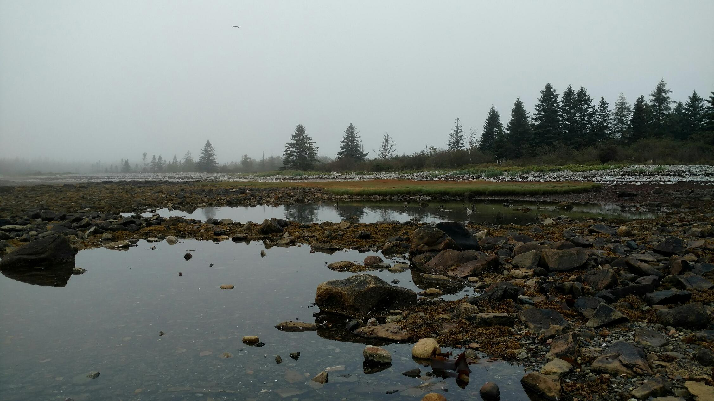
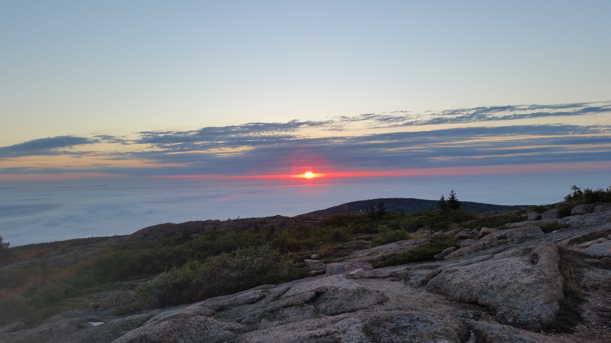
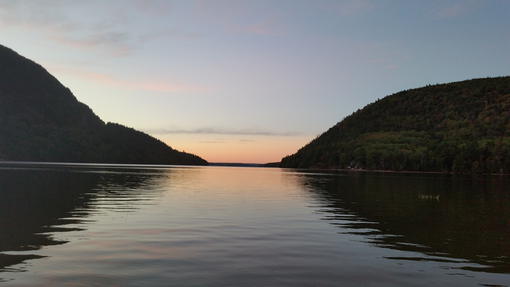

It's been over two weeks now! Pretty hard to believe. We're once again recuperating in Starbucks (seriously, this place is a godsend for traveling millennials... buy one drink, and get unlimited wifi!) this time in Bangor, Maine.
Lobster Company was awesome, by the way; turns out Portland is "the foodiest city in... wherever" ~ some guy working at a bagel place we stopped at. We had an awesome time in the city, spent a lot of time roaming the beautiful Eastern Promenade, and the Portland Museum of Art:

The most fabulous hunter trophy you've ever seen.
They had a craft area, where you made birds out of paper and tape! Bears are birds, right?
We even got to catch up with some friends from home! (And get another, much needed shower). We had a big Pioneer Valley reunion at the hippest beer-snob bar I've ever seen, called Novare Res. This place had like 5000 beers we had never heard of, so we let our brew-fanatic friends make all our selections, like the plebs we are. The place had a very 'Platform 9 3/4' feel to it, as did the whole city: can't even tell you how easy it was to miss shit if you weren't coming from the right way! Novare Res had a sweet beer garden to it, wish I could've snagged a photo myself:
Those are hops!
Then we headed to the sickest barcade, Arcadia National Bar (clever, right?) and got our fill of video games. They had so many console games, seriously doing it right. Funny enough, they required IDs as collateral for N64 games. We ended the night in a lovely haze and slept in our more recent Portland spot, a hotel parking lot in South Portland.
The next morning it was time to leave Portland, even though we loved it so much. Seriously, one of my favorite cities I've visited in my life. Our next destination was Bar Harbor and Acadia National Park, and we took the beautiful coastal road to get there. We stopped off in Rockland, a cute little city on the coast, to buy some books--I picked up Dave Eggers' "Your Fathers, Where Are They? And the Prophets, Do They Live Forever?" and I'm enjoying it a lot so far. We grabbed some dinner at Rock Harbor Bar and Grill, and let me tell you: the buffalo chicken mac and cheese was insane.
We made it to another small coastal city, Belfast, and slept in a municipal parking lot. Construction right next to the lot and oncoming rain woke us in the most unpleasant manner, and we got going on the road to Mount Desert Island. Of course, it wasn't that easy, and we realized I left my favorite hoodie back at Rock Harbor! We made the four hour round trip without question, and finally, actually arrived at Bar Harbor late. We slept in another municipal lot, this one blessedly construction-free. In the morning we toured the island, despite heavy fog that made the whole island seem like some dreary fantasy realm:
Welcome to Acadia.
Turns out, we were pretty let down by the island. Don't get me wrong, the park was astoundingly beautiful! But man, I have never seen such a tourist trap either. Bar Harbor was painfully expensive, and we were constantly struck by how much older everyone else was--barring their young children. Seriously, it was like a Vineyard Vines ad.
Despite that, we had an amazing time touring the island. We checked out the Bass Head Lighthouse:

I had Bassnectar's "Bass Head" stuck in my head all day.
We walked down by the Natural Seawall (way less cool than the name implies), and hiked up the little Mt Bernard just in time for the weather to break:

The fog rolled through Great Notch right as we were looking down into it, on the other side. It was kickass.

The woods all up the mountain were absolutely rife with spider webs. Sign of a healthy forest!
That evening we picnicked in a little rec park in Bar Harbor, making pasta with sausage! (Let me tell you, it's not an easy dish with only one burner, but we nailed it!) We slept in the same municipal lot, and woke up crazy early to do the classic tourist activity:
Catch the US's first glimmers of sunrise from Mount Cadillac!
Then we made breakfast and read on the mountaintop for a few hours. Not bad.

COFFEE!!!!
Then we took a big change of pace, and made lunch and read in the woods by Mount Bernand for the afternoon. I found a walking stick in those woods the previous day, and spent some time... 'perfecting' it. That evening, we took a walk around Long Pond, and even saw a bald eagle!! We walked up right as it had finished fucking up a Peregrine Falcon, which was pretty insane to see. The poor falcon slowly drowned while it cried to us for help, but there wasn't much we could do...
On the bright side (and despite my crooked shot), it was very pretty!
We spent another night in our new parking-lot-for-a-home, and woke early again to do some yoga by the shore! Then we took a walk along the harbor to (one of many) Bar Island.

HOW?!?!?!?
We were starved - and spoiled on hot food from the day before - so grabbed some hot breakfast (BLUEBERRY PANCAKES, MOTHAFUCKAAAA!!) at the Great Maine Breakfast. Then we got on the Park Loop Road, stopping first at the Wild Gardens, a pretty little spot highlighting the local ecosystem. We ended up going for a short hike by Sand Beach:

Then checked out this rocky place called Thunder Hole:

We missed the proper time for the big tides, but it was still pretty awesome!
We went rock climbing down Otter Cliffs, which was pretty funny: we saw a bunch of tourists climbing the same cliffs with ropes, belays, and helmets--Lacey wasn't even wearing shoes!!

Obligatory 'too cute' selfie
That afternoon, we just chilled out in our cozy parking lot and I made a beat (which you can check out here).

We ended the lovely/busy day with another picnic, followed by a presentation by some park rangers: Stars Over Sand Beach! We spent our last night on Mount Desert Island in the same reliable spot. We left the island, headed into Bangor, and did some much needed cleaning/bathing before having an awesome steak dinner (after all the priciness of Bar Harbor, we were too tempted to splurge again). We drove deep into the woods northeast of the city to stay at Indian Camp Stream Day Use Area, in Amherst (!!!).
Tomorrow, we're headed to the brand new Katahdin Woods and Waters National Monument to explore and hike that beautiful-looking mountain.

Thanks for reading, and stay tuned for more!
Mileage: 1500
Weather: Clear, mildly humid, windy, 58F
Currently listening to: Trevor Something - Trevor Something Does Not Exist